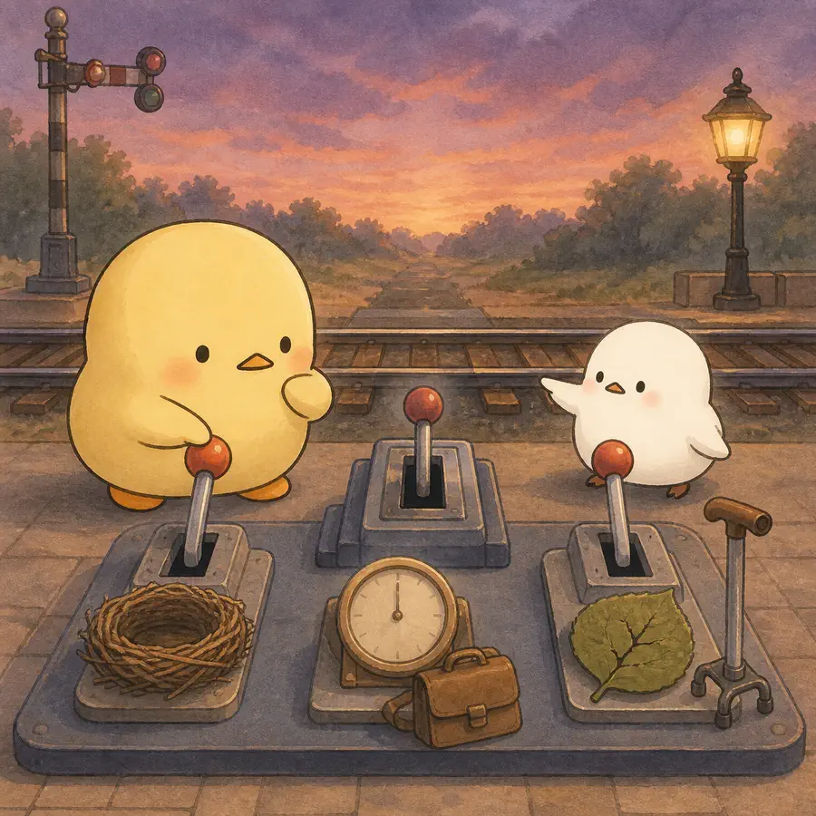
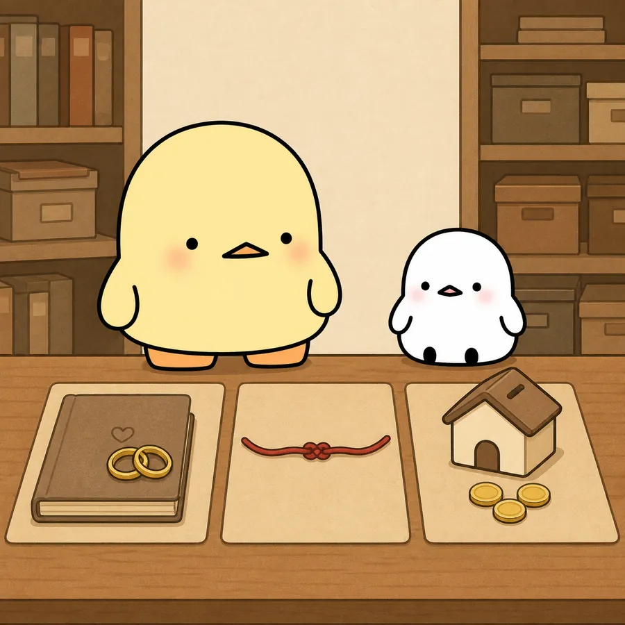

ILLUSTRATED OVERVIEW
황혼이혼, 무엇이 갈림길을 만들까?
빈 둥지·은퇴·건강 악화가 정말 황혼이혼을 부를까요? 14년간의 부부 자료에서 생애 전환과 결혼 이력·관계의 질·경제 여건을 함께 살펴봅니다.
옆으로 넘겨 4컷 보기
-
황혼이혼은 결혼기간이 아니라 이혼 시점에 배우자 중 적어도 한 명이 50세 이상인 사건이다.
-

빈 둥지, 아내·남편의 은퇴, 만성질환은 완전조정모형에서 황혼이혼을 유의하게 예측하지 않았다.
-

결혼기간과 두 배우자의 결혼 질, 인종 간 결혼, 주택소유와 자산이 황혼이혼 가능성과 관련됐다.
-
전환 효과가 뚜렷하지 않았지만, 한 번만 측정한 결혼의 질과 표본 이탈 등은 해석의 한계로 남는다.